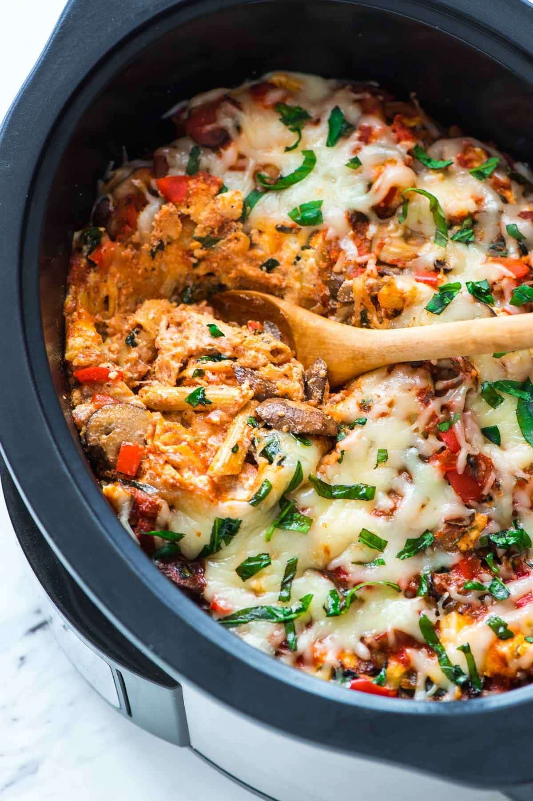

Crock Pot Pasta

Description
Crockpot Pasta is one of those recipes that makes me feel like I’ve got it all together. The slow cooker makes the recipe prep easy-breezy, and its traditional Italian flavors rival pasta dishes I’ve ordered at restaurants.
Ingredients
- Whole Wheat Pasta
- Cheese
- Veggies
- Pasta Sauce
Steps
- Sauté vegetables. Add spinach and garlic
- Combine ricotta, egg, salt, and pepper. Stir in mozzarella and Parmesan
- Grease slow cooker. Spread a thin layer of sauce, then top with half of your uncooked pasta. Pour in more sauce, top with half of the ricotta mixture, then add half the vegetables.
- Repeat these layers. Pour over sauce. Cover and cook
- Melt mozzarella cheese on top. Serve warm with fresh herbs. ENJOY